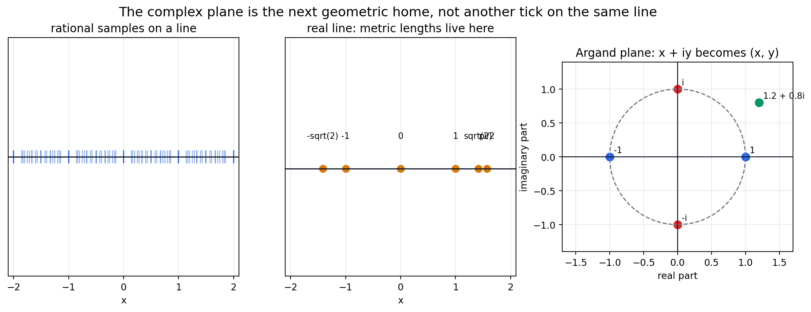
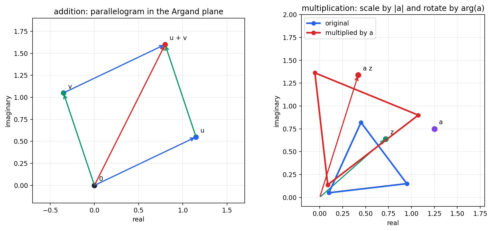
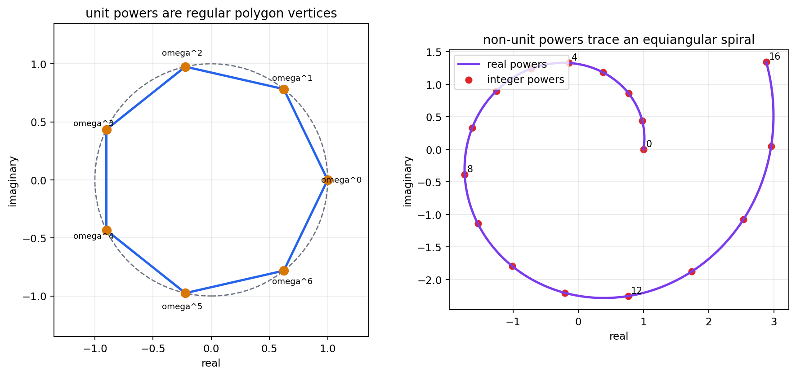
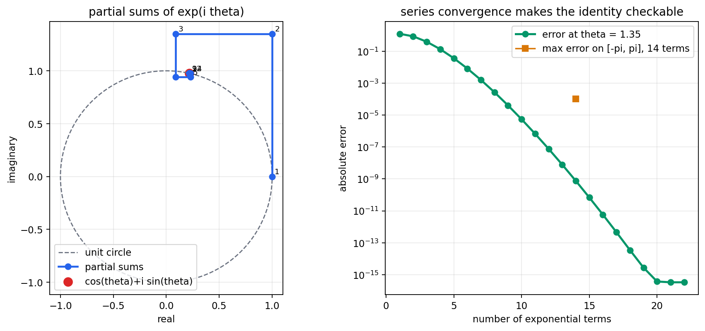
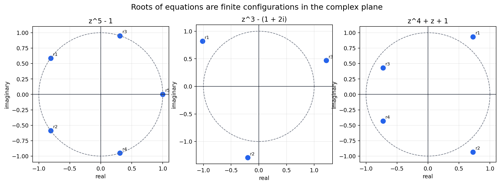

Source Span
Printed pages 135-147; PDF pages 153-165.
Core Move
Replace one real number line with a plane where \(i^2=-1\).
Guiding Question
What does each algebraic operation do to modulus, argument, roots, and angles?

The Argand plane turns algebra into geometry: addition translates, multiplication rotates and scales, and analytic maps preserve local angle structure.
Printed pages 135-147; PDF pages 153-165.
Replace one real number line with a plane where \(i^2=-1\).
What does each algebraic operation do to modulus, argument, roots, and angles?

Rational approximations lead to a two-dimensional number plane.
Addition and multiplication become visible plane operations.
Powers and roots become radius and angle patterns.
Series convergence lands on the unit circle.
Polynomial solutions form constellations in the complex plane.
Homographies preserve generalized circle and angle behavior locally.
$$i^2=-1,\qquad z=x+iy$$
\(140/99\), error \(7.21\times10^{-5}\).
\(355/113\), error \(2.67\times10^{-7}\).
Nine rational approximations show how real numbers are approached before the plane direction is introduced.
$$r e^{i\theta}\cdot s e^{i\phi}=rs\,e^{i(\theta+\phi)}$$
1.458
0.540
Modulus product and argument addition residuals are \(0.0\); matrix product residual is \(5.55\times10^{-17}\).


$$\left(re^{i\theta}\right)^n=r^n e^{in\theta}$$
7
0.898
Angle-step standard deviation \(5.31\times10^{-16}\); \(\omega^7=1\) residual \(6.68\times10^{-16}\).
Angle step \(0.42\), radial ratio \(1.075\).
$$e^{i\theta}=\cos\theta+i\sin\theta$$
1.35
3.33e-16
Max 14-term error on \([-\pi,\pi]\) is \(1.03\times10^{-4}\).
\(e^{i\pi}+1=0\) with residual \(1.22\times10^{-16}\).


\(z^5-1\), \(z^3-(1+2i)\), and \(z^4+z+1\).
12
4.74e-15
Radius records modulus, angle records argument, and conjugate symmetry is visible when coefficients are real.
$$z\mapsto {az+b\over cz+d}$$
Translation \(z+b\), dilative rotation \(az\), inversion \(1/z\), and homography.
1.100
1.100
Angle preservation error is \(1.42\times10^{-6}\).
Inspect translation and parallelogram closure.
Inspect modulus product and argument sum.
Inspect repeated angle steps on a circle.
Inspect convergence toward \(e^{i\theta}\).
Inspect constellations and residuals.
Inspect local angle preservation and generalized circles.
When the algebra changes, ask what changes in radius, angle, circle structure, or local tangent directions.
Addition translates; multiplication scales and rotates.
Modulus and amplitude organize powers, roots, and spirals.
The exponential series realizes rotation on the unit circle.
Holomorphic transformations preserve local angle data away from singularities.